TG1 · 사고 GUI 데스크톱 스타일 마일스톤 · 사람 게이트(ui-visual)
TG1 육안 검수 — 22컷 열람 가이드
읽는 법
위에서 아래로 순서대로 한 컷씩(장면당 dark/light 나란히) 육안 검수합니다. 각 컷의 확인 포인트(그 스크린샷이 무엇을 증명하는 채증인지)를 먼저 읽고, 이미지가 그대로 성립하면 "통과"를 체크하세요. 이미지를 클릭하면 원본 파일이 새 탭으로 열립니다(확대 확인용).
주의 — 체크박스는 저장되지 않습니다. 이 문서는 정적 HTML이라 새로고침하면 체크가 초기화됩니다. 통과/보류는 별도로(메인 세션에 구두로) 남겨 주세요.
빨간 테두리 컷(4번 · 이중 말줄임)은 봉합 확인 컷입니다 — 회귀 감시용이라 특히 눈여겨봐 주세요(점이 6개면 회귀).
| 장면 | 내용 | 컷 | 번호 | Phase |
|---|---|---|---|---|
| 장면 1 | 턴 블록 통합 — 한 턴=한 블록=아바타 1개(Spark 실렌더) | 2 | 1–2 | P03 |
| 장면 2 | 상태 라인 4요소 한 줄 통합(사고 중) | 2 | 3–4 | P04 |
| 장면 3 | 상태 라인 소멸 + 답변이 같은 턴 블록 | 2 | 5–6 | P04 |
| 장면 4 | 이중 말줄임 봉합 확인 컷 (회귀 감시) | 2 | 7–8 | P04·P07 |
| 장면 5 | 멀티패널 동형 턴 블록(로고 1개·bare 버블) | 2 | 9–10 | P06 |
| 장면 6 | 서브에이전트 우아한 부재(정적 ✻·배지 부재) | 2 | 11–12 | P06·P05 |
| 장면 7 | 서브에이전트 데이터 부재 명시 문구 | 2 | 13–14 | P06·P05 |
| 장면 8 | 스플릿 뷰 균등 셀·지그재그 배치·활성 정적 하이라이트 (마감 후 편입) | 2 | 15–16 | P08 |
| 장면 9 | Welcome 히어로 — 공식 Spark 마크 (상표 오인 명시 판정 + 중립 표면 봉합) | 2 | 17–18 | P09 |
| 장면 10 | SettingsModal 엔진 표시 2곳 — 구 아이콘 → 공식 Spark 교체 | 2 | 19–20 | P09 |
| 장면 11 | GitModal AI 커밋 버튼 — 구 아이콘 → 공식 Spark 교체 | 2 | 21–22 | P09 |
| 합계 | — | 22 | 1–22 | — |
턴 블록 통합 — 한 턴 = 한 블록 = 아바타 1개
예전엔 사고 상태·사고 전문·답변 버블이 각자 아바타를 단 독립 .msg 블록 3개로 나열됐다. P03이 groupIntoTurnBlocks로 이 셋을 같은 블록의 좌측 연속 거터(│)로 꿰었다.
p03-single-turn-{dark,light}.png확인 포인트 — 한 턴이 한 블록으로 묶이고 아바타가 1개인지. 아바타는 자체 SVG가 아니라 공식 Claude Spark 실렌더(.ava-spark)여야 한다. 좌측 연속 거터를 따라 사고 전문 → 답변이 한 흐름으로 읽히는지(예전처럼 아바타 3개 단 별개 블록으로 쪼개지지 않는지) 확인.
{kind=link}
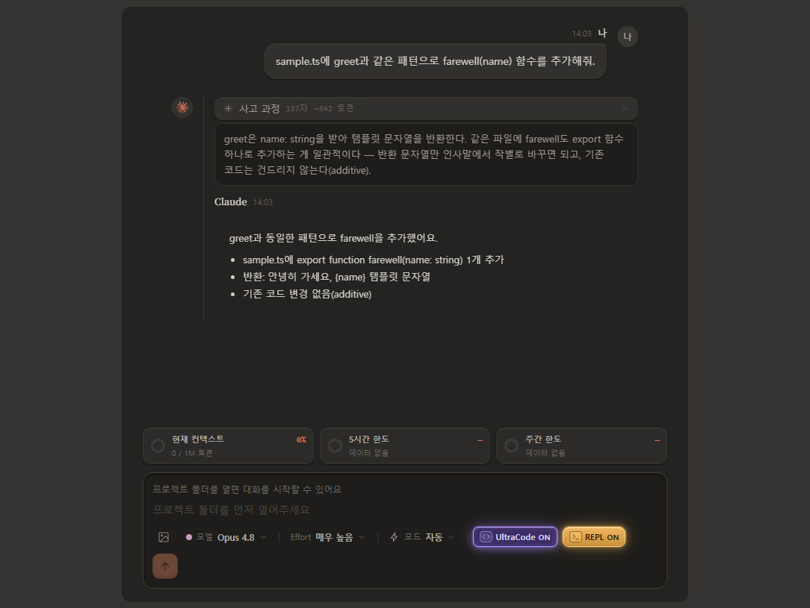
{kind=link}
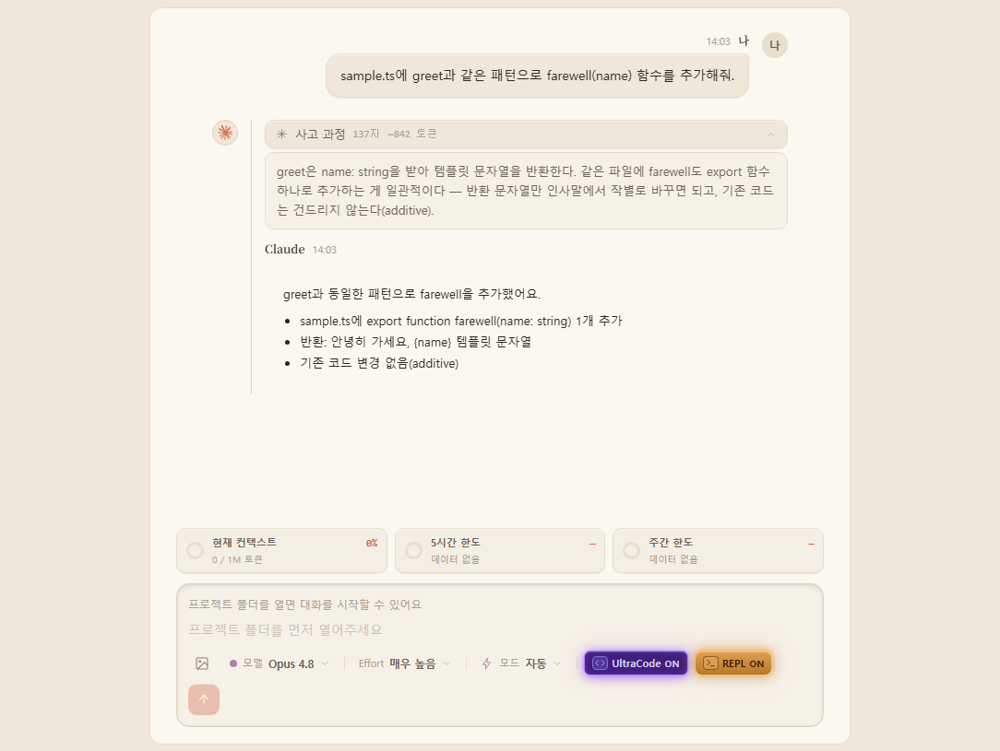
한 줄 상태 라인 — 4요소 통합 (사고 중)
사고 신호(심볼 애니메이션·유희적 동사 순환·경과 초·실시간 토큰)를 각각의 위젯이 아니라 한 줄로 통합한 StatusLine. 구 WorkingIndicator의 과도한 다리를 흡수했다.
p04-status-thinking-{dark,light}.png확인 포인트 — 상태 라인이 "✻ 동사… (12s · ↑ 3.4k tokens)" 형태로 4요소가 한 줄에 통합됐는지: ① ✻ 심볼(애니메이션) ② 유희적 동사(궁리하는 중 등, 순환) ③ 경과 초(12s) ④ 실시간 토큰(↑ 3.4k tokens). 예전처럼 스피너·전문·토큰 게이지가 따로 노는 게 아니라 한 줄로 정돈됐는지 확인.
{kind=link}
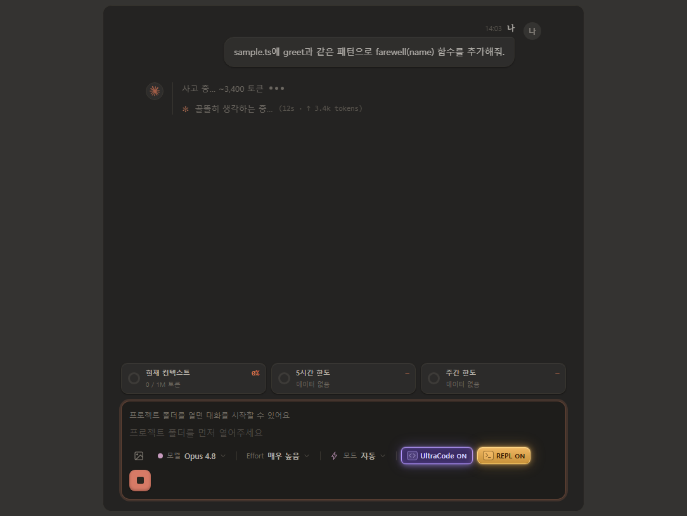
{kind=link}
상태 라인 소멸 — 답변이 같은 턴 블록에서 이어짐
답변이 시작되면 상태 라인이 소멸한다(thinkingStartedAt null 리셋). 핵심은 소멸이 같은 턴 블록 내부 전이라는 것 — 답변이 별개 블록으로 새로 등장하지 않는다.
p04-transitioned-{dark,light}.png확인 포인트 — 사고가 끝나고 답변으로 넘어간 상태. 상태 라인이 소멸했고, 답변이 같은 턴 블록 안에서 이어지는지(별개 블록이 새로 등장하지 않는지) 확인. 아바타는 여전히 턴당 1개(Spark)여야 한다.
{kind=link}
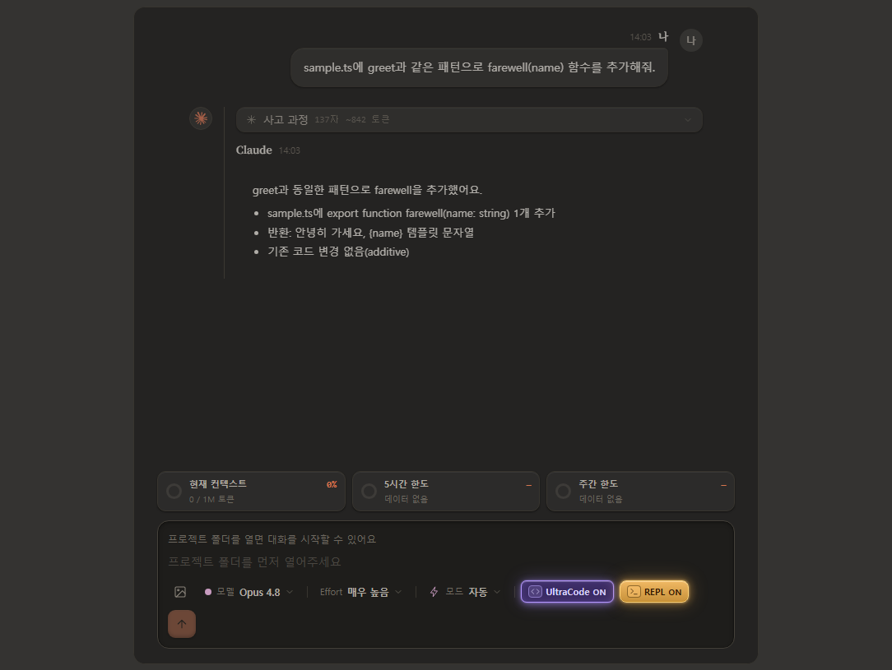
{kind=link}
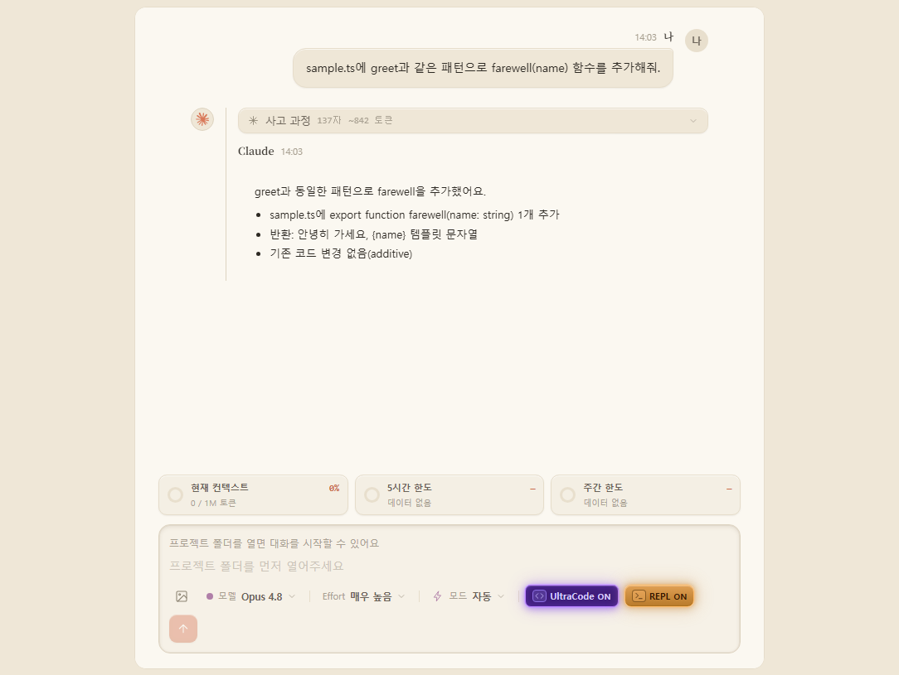
이중 말줄임 봉합 확인 — 회귀 감시
P07 채증 중 발견한 헌팅 결함: thinkingText가 이미 말줄임(…)으로 끝나는 케이스에서 상태 라인이 말줄임을 한 번 더 붙여 점 6개("……")가 보였다. 말미 말줄임 런을 단일 …로 정규화해 봉합(c291b2c). 이 컷이 그 회귀의 감시자다.
p04-double-ellipsis-{dark,light}.png확인 포인트 (봉합 확인) — thinkingText가 …로 끝나는 케이스에서 상태 라인 말미가 단일 말줄임(…)으로 정규화됐는지. 점이 6개("……")로 보이면 회귀(c291b2c 봉합이 풀린 것) — 이 경우 통과 체크하지 말고 메인 세션에 보고. 점 3개면 정상.
{kind=link}
{kind=link}
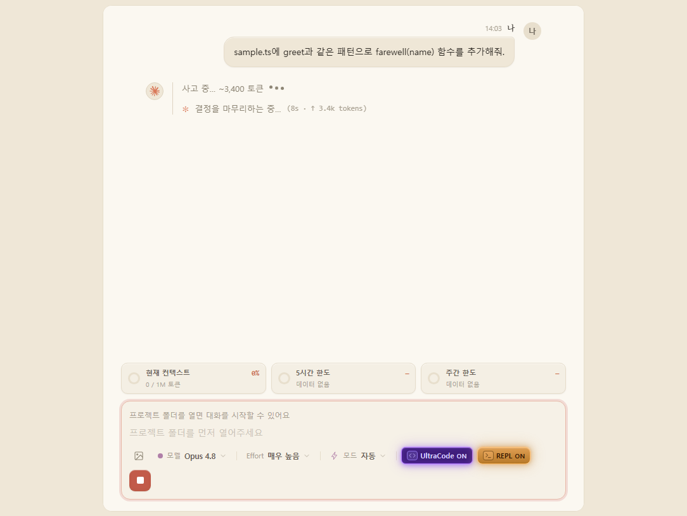
멀티패널 동형 턴 블록 — 로고 1개 · bare 버블
단일챗에서 완성한 턴 블록·상태 라인·Spark 아바타를 멀티패널에 전파. PanelView가 자체 루프를 버리고 groupIntoTurnBlocks 턴 블록을 쓰며, 공유 리프 MessageBubble로 아바타가 자동 전파됐다.
p06-panel-turn-{dark,light}.png확인 포인트 — 멀티패널에서도 단일챗과 동형의 턴 블록인지: 턴당 로고(아바타) 1개 · bare 버블(중복 프레임 없이) · 상태 라인 흡수. 패널이 예전 자체 루프 스타일이 아니라 단일챗과 같은 구조로 렌더되는지 확인.
{kind=link}
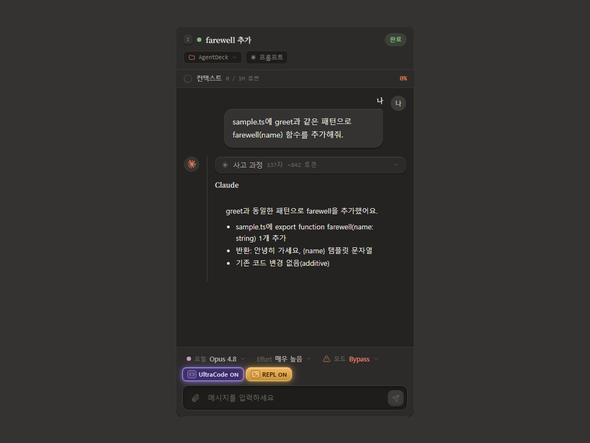
{kind=link}
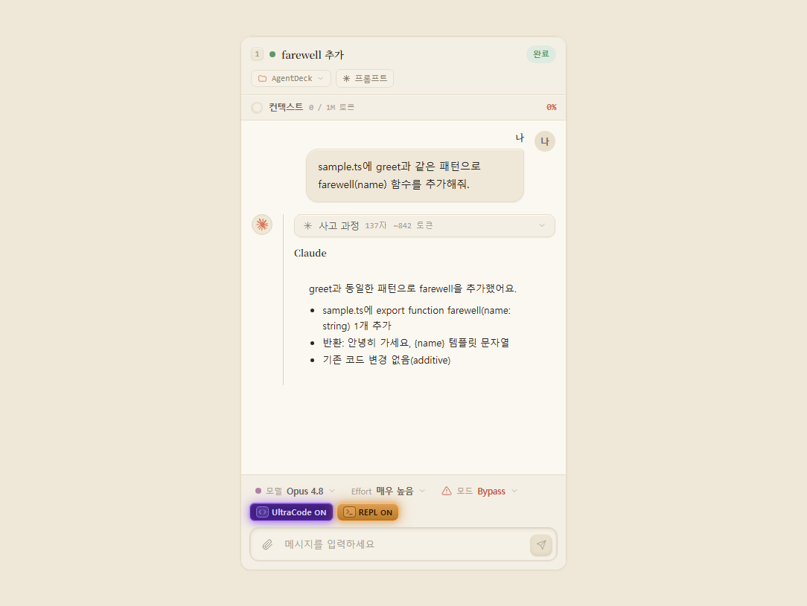
서브에이전트 우아한 부재 — 정적 ✻ · 배지 부재가 정직하게
서브에이전트는 SDK 귀속 채널 부재(P05 판정)로 사고 토큰·훅 배지 데이터가 없다. 그래서 서브 셀은 정적 ✻(라이브 틱 미채택 — 데이터 없이 애니메이션만 돌리면 거짓 신호)로, 토큰·훅 배지는 부재로 처리했다.
p06-subagent-graceful-{dark,light}.png확인 포인트 — 서브에이전트 셀의 사고 표시가 정적 ✻(.saf-status-symbol)이고, 토큰 카운트·훅 배지가 없는 것이 정직하게 처리됐는지. 단일챗의 실시간 상태 라인(경과 초·증가하는 토큰)과 혼동되지 않는지(서브는 데이터가 없어 정적이어야 정상 — 가짜 실시간처럼 보이면 안 됨) 확인.
{kind=link}
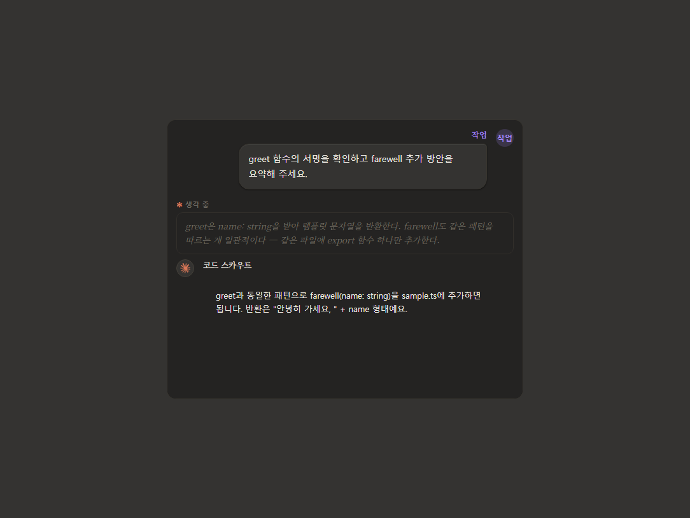
{kind=link}
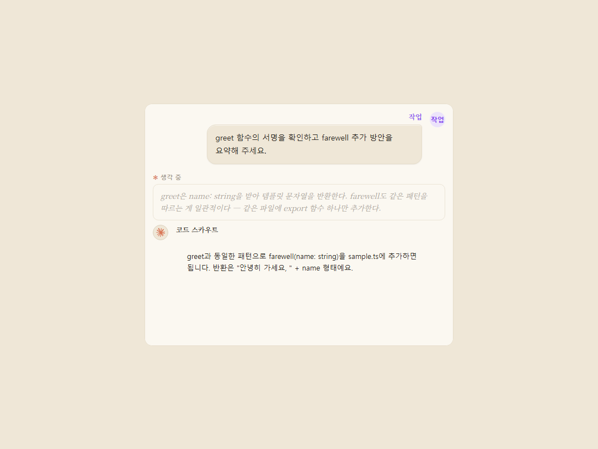
서브에이전트 데이터 부재 — 명시 문구 (조용한 공백 아님)
데이터가 아예 없을 때 화면을 그냥 비워두면 "버그인지 데이터가 없는 건지" 알 수 없다. P06은 부재를 명시 문구로 드러낸다(조용한 드롭 금지 원칙의 UI 구현).
p06-subagent-empty-{dark,light}.png확인 포인트 — 서브에이전트 데이터가 부재할 때 명시 문구로 부재를 드러내는지(그냥 빈 공백이 아니라 "데이터 없음"류 문구). 조용한 공백이면 사용자가 결함으로 오해할 수 있으므로, 부재를 정직하게 말하는 처리인지 확인.
{kind=link}
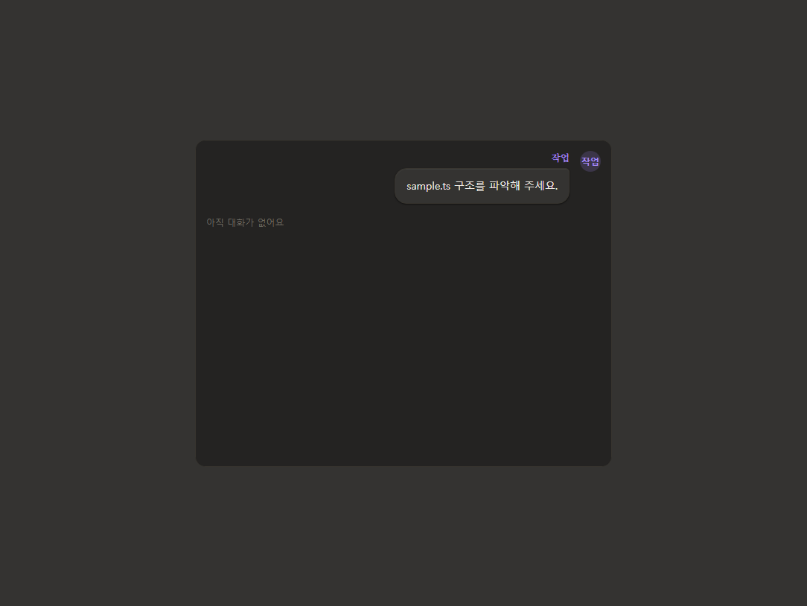
{kind=link}
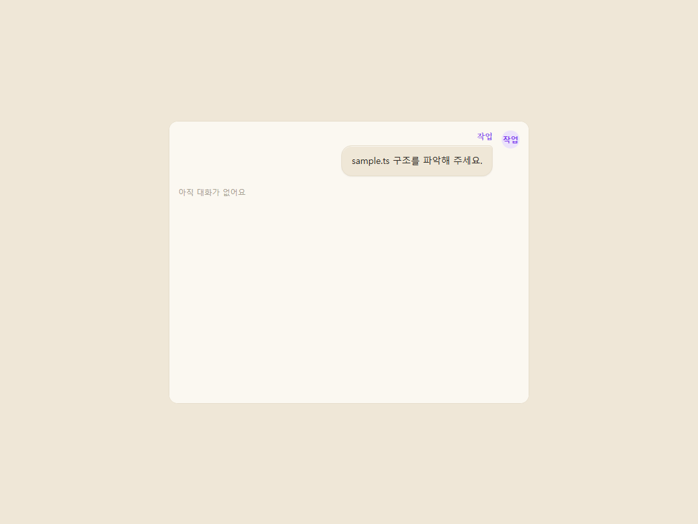
스플릿 뷰 균등 셀 · 지그재그 배치 · 활성 정적 하이라이트
서브에이전트 스플릿 뷰 재작업(영호 육안 피드백 3건, 2026-07-17 편입). 예전엔 활성 셀이 자동으로 커지고(flex-grow 2:1) 셀이 좌측 컬럼부터 채워졌다. P08은 이를 전 셀 균등 크기 + 좌·우·좌·우 지그재그 + 활성 정적 하이라이트(크기 불변)로 바꿨다.
p08-split-zigzag-{dark,light}.png확인 포인트 — ① 셀 크기가 전부 균등한가(활성이라고 커지는 셀 없음, 확대 reflow 0) · ② 지그재그 배치인가(짝수=좌·홀수=우 — 셀이 3개면 좌 2·우 1) · ③ 활성 셀에 정적 테두리 하이라이트가 있는가(테두리·헤더 점등 — 크기는 그대로, 색으로만 강조). 양테마 동일.
{kind=link}
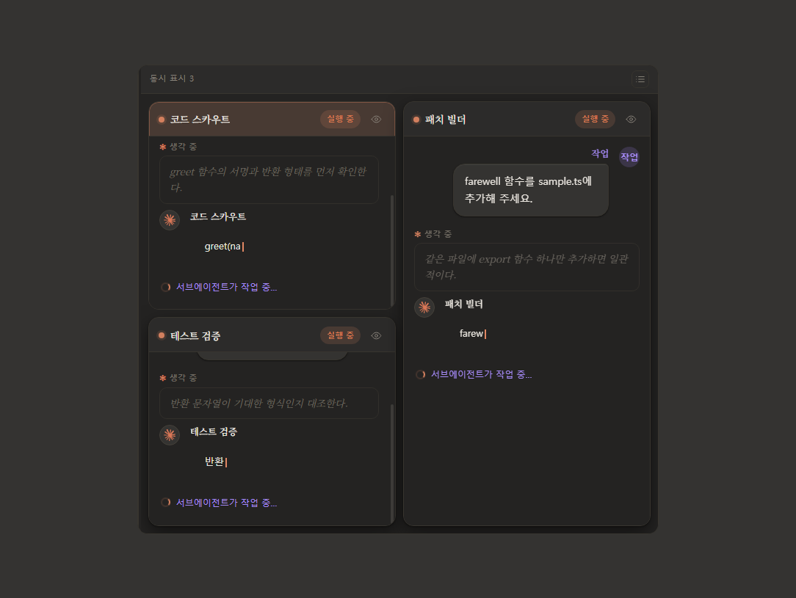
{kind=link}
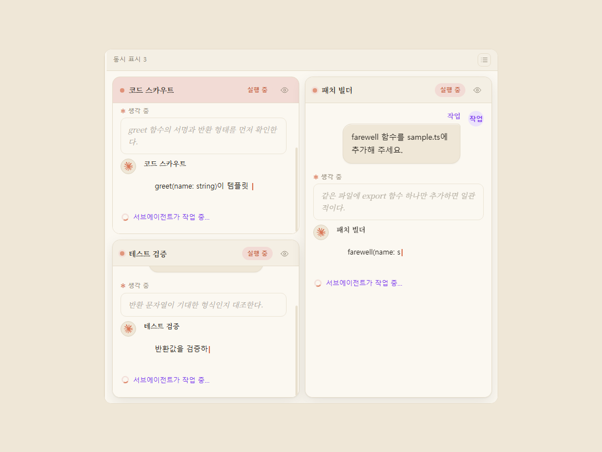
Welcome 히어로 — 공식 Spark 마크 (상표 오인 명시 판정 + 중립 표면 봉합)
P09가 provider→브랜드 로고를 단일소스(providerBrand.ts)로 세우면서, Welcome 첫 화면의 히어로 마크도 공식 Spark로 수렴했다. 이 컷은 단순 통과가 아니라 두 가지를 명시적으로 판정해야 하는 자리다 — 상표 오인 여부와 저대비 봉합의 시각 결과.
p09-welcome-hero-{dark,light}.png명시 판정 ① (상표 오인) — Welcome 히어로의 공식 Spark가 "현재 엔진 = Claude Code" 표시로 읽히는가, 아니면 "AgentDeck이 Claude/Anthropic 제품"이라는 제휴·후원 오인으로 읽히는가? 상표 게이트 ①(앱 아이덴티티에 로고 금지)의 경계 판정이다 — 앱 자체를 대표하는 아이덴티티처럼 보이면 보류하고 메인 세션에 보고.
명시 판정 ② (중립 표면 봉합) — reviewer 🟡-1(accent 위 Clay 저대비)을 .wc-mark.wc-mark-spark 중립 표면(--surface-2 + --line-2)으로 봉합했다. 마크가 배경 위에서 충분한 대비로 또렷한지(저대비로 뭉개지지 않는지) 시각 판단.
{kind=link}
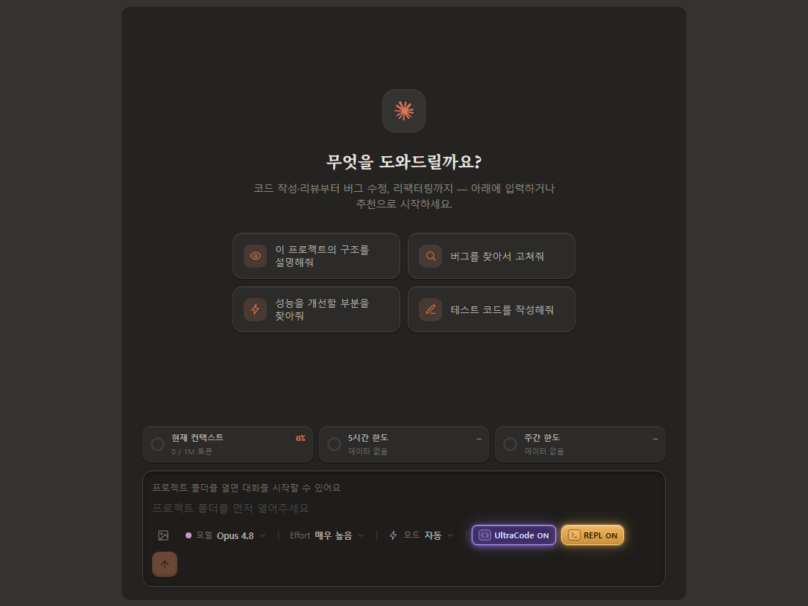
{kind=link}
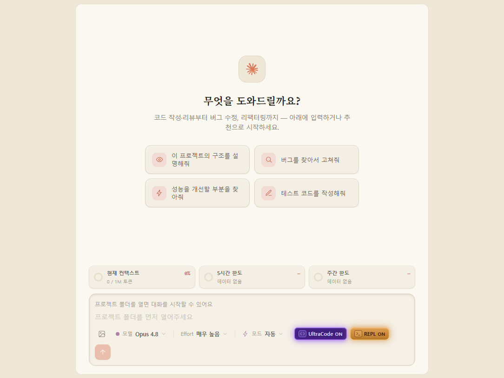
SettingsModal 엔진 표시 2곳 — 구 아이콘 → 공식 Spark 교체
상표 게이트 확장(영호 GO 2026-07-17 — 대화 아바타 한정 → provider 기준 엔진 표시 전반)으로, 설정 모달의 엔진 표시 2곳(엔진 탭 · 현재 엔진 카드)도 provider SSOT를 소비해 구 아이콘에서 공식 Spark로 교체됐다.
p09-settings-engine-{dark,light}.png확인 포인트 — SettingsModal의 엔진 표시 2곳(엔진 선택 탭 · 현재 엔진 카드)이 구 아이콘 → 공식 Spark로 교체됐는지. 두 곳 모두 같은 provider 마크(단일소스)로 일관되게 렌더되는지, 양테마에서 마크가 또렷한지 확인.
{kind=link}
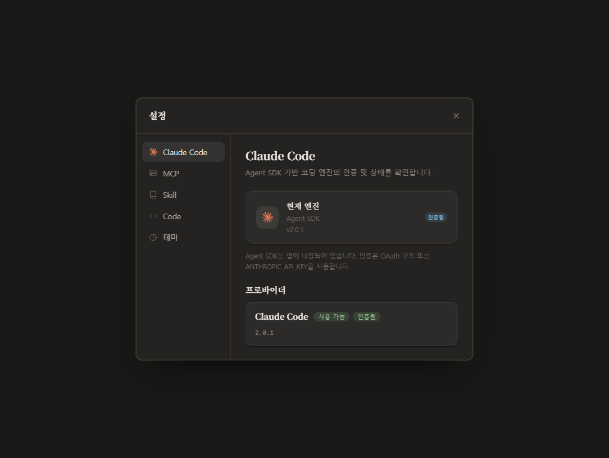
{kind=link}
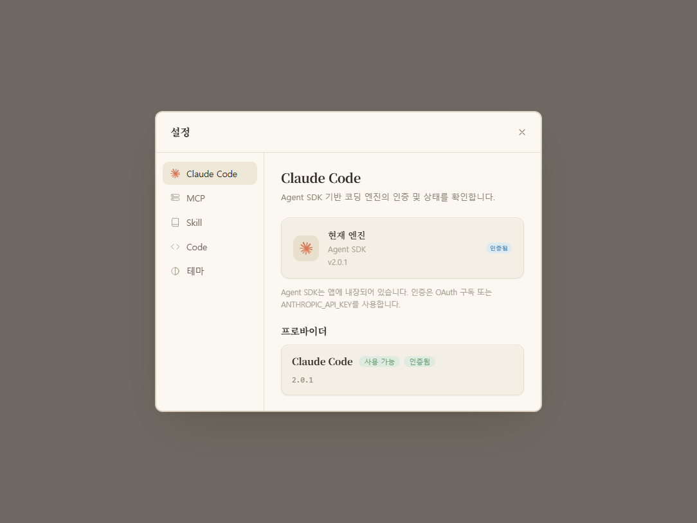
GitModal AI 커밋 버튼 — 구 아이콘 → 공식 Spark 교체
GitModal의 AI 커밋 메시지 생성 버튼 아이콘도 provider SSOT를 소비한다. 엔진 표시 전반 확장의 마지막 소비처로, 구 아이콘에서 공식 Spark로 교체됐다.
p09-git-commit-{dark,light}.png확인 포인트 — GitModal AI 커밋 버튼의 아이콘이 구 아이콘 → 공식 Spark로 교체됐는지. 버튼 크기·레이아웃 안에서 마크가 깨지지 않고 또렷하게 자리 잡는지, 양테마 동일하게 확인.
{kind=link}
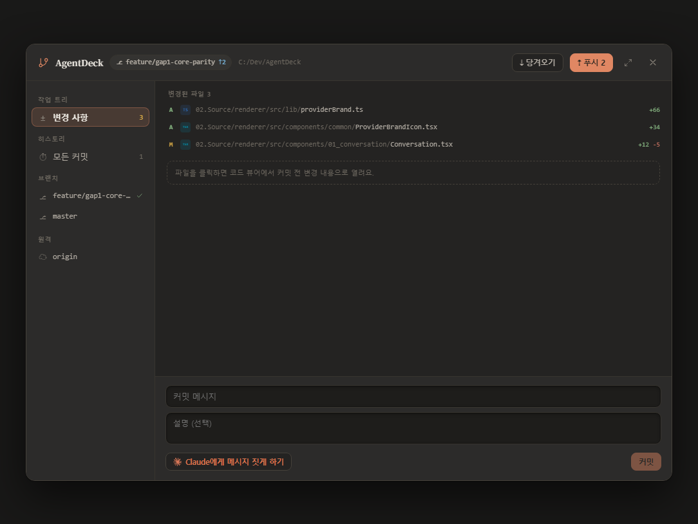
{kind=link}
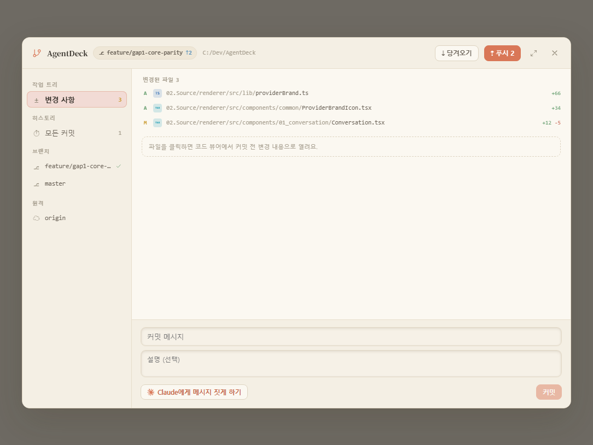
영호 판단 몫 (원하면 후속, 안 해도 마감 무관)
아래 둘은 결함이 아니라 의도적 선택이다. 기능 게이트와 무관하니 통과/보류 체크 대상이 아니라 "이대로 둘지, 후속으로 손볼지" 취향 판단만 남긴다.
① P04 🟡3 — phrase 전환 페이드 부재
구 WorkingIndicator에는 동사(phrase)가 바뀔 때 페이드(부드러운 전환) 연출이 있었다. 새 StatusLine은 이를 의도적으로 단순화(즉시 교체)했다. 트레이드오프 — 단순화로 코드·재렌더가 가벼워졌으나 전환이 다소 딱딱할 수 있다. 원하면 페이드를 후속으로 재도입 가능(백로그).
② P06 — 서브 표면 외관 변화 (아바타 Spark 전환)
공용 리프 MessageBubble 아바타를 Claude Spark로 교체하면서 서브에이전트 표면의 아바타 외관도 함께 바뀌었다(엔진 분기·폴백 보존). 기능 변화가 아니라 시각 외관 변화라, 서브 셀 모습이 이전과 달라 보이는 것이 의도대로인지 육안으로 확인만 하면 된다(reviewer 🟡, 육안 귀속).